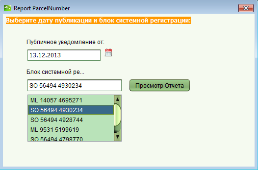

Подготовка списков публичного показа
На этом этапе подготавливаются различные списки предназначенные для использования в период публичного показа.
Списки включают в себя два типа частных земельных владений; один упорядочен по имени заявителя, второй по номеру участка.
Также могут быть подготовлены списки государственных земель.
Все списки подготавливаются для определенного блока системной регистрации.
Шаги
-
В главном окне SOLA Desktop выберите меню "Системная Регистрация" => "Опубликовать уведомление".
Из последующего подменю выберите тип списка, которые вы хотите подготовить.
-
Введите дату начала публичного показа для блока.
-
Введите имя блока в поле "Блок системной регистрации". При наборе имени, будет осуществлен автоматический поиск и
подходящие варианты отображены в виде выпадающего списка.
Выберите из списка имя блока и нажмите кнопку "Просмотр Отчета".
-
Отчет находящиеся в цифровом архиве SOLA, может быть извлечен через форму поиска документов.
Для этого в качестве критерия поиска используйте
PublicDisplay<<Имя блока>> в качестве номера документа
и тип документа "Публичное Уведомление о Системной Регистрации".

Смотрите также: